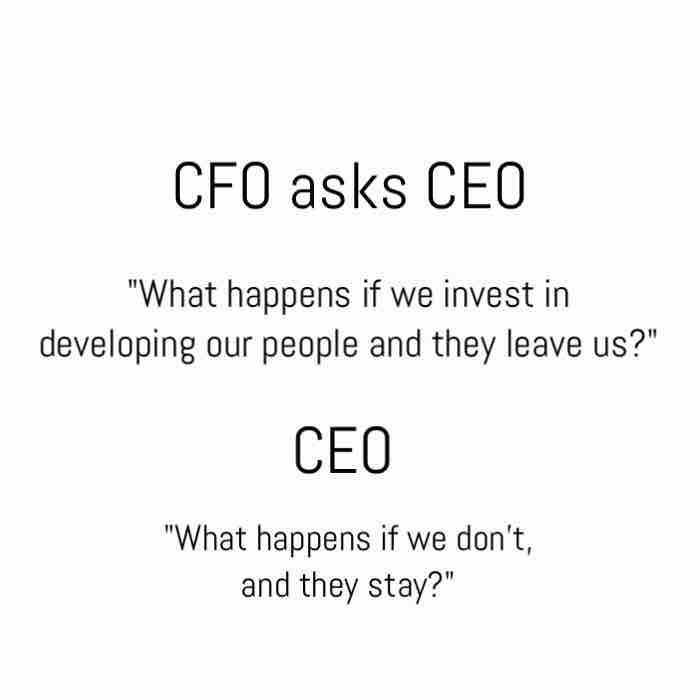

Never Stop LEARNING...
PREVIOUS BLOG
CEOs: 3 Ways to Speed up Business Success-PART 2/2
Article Length: 500 words.Reading time: 3~4 minutes.
(CLICK HERE) To Read Part 1 of this blog.
Bruce Chen (26) graduated from a famous technical university in Nanjing in 2012. Later he joined Blue Sky InfoTech in Hangzhou for internship. His mentor helped him to have basic insight in cloud and big data technologies. After finishing his 1 year internship, he moved to Beijing and apply for a job in a reputed firm. Interview was conducted by John, Sr. Programmer. John merely stress on technicalities and failed to identify Bruce’s basic understanding, his aspirations and passion towards these technologies. Bruce was being told that he’ll be informed later. But he never received any info from the company. Bruce decided never apply that company and urged all his friends never to think of this company.
This create a negative feedback loop about that firm. Such feedback severely affect organization’s capabilities to attract right talent therefore failed to gain competitive edge against competitors. Organization gain competitive edge not merely by latest tool or technologies, rather by rich talent and ambitious resource pool. Therefore Talent Management need to be number 1 priority of the firm to stay in market and maintain its competitive edge.
3. Resource Management: Hire and retain the best talent: This is the biggest nightmare of companies. Especially for CEOs and top management. A lot has been said and written about it. I’m summarizing my viewpoint here-
How to hire best talent?
- Seasoned hiring manager need to be present in interview. In most enterprises tech lead of PM conduct the interview who give more weightage to technical aspect rather than candidate’s actual potential and capabilities. Thus high chances to lose a creative and ambitious talent.
- Shorten interview cycles: Reducing rounds of interview is convenient and cost effective for employer and applicants both.
- Feedback: Always provide formal/informal feedback irrespective of candidate is selected or not. It’ll create trust and build reputation of company. Candidate may return later after acquiring the skill set or recommend his/her friends. In most cases “We’ll inform you later” is an informal reply from employer. Finally there is no such information. It is quite unprofessional practice which absolutely break the relation between applicant and company for forever.
Retaining the talent:

HR need to expand their role and continuously implement Talent Management best practices. Employee don’t leave the company. They leave the managers. HR need to take following measures to reduce the attrition.
- Develop Enterprise Learning Platform: GenX employees are career conscious they want to develop professionally and personally. However they are not avail any career counselling or learning platform to move ahead in their career. It create hopelessness in employees thus talent simply lose to competitors.
- Dealing with Top Talent: Management need to keep engaged the top performer via role expansion, challenging opportunities and right placement.
- Implement Employee Engagement Strategies: Enterprises needs to review and renovate employee engagement strategies. These strategies should align employee welfare with organizational goals. Thus it is a win-win situation for each stakeholder.
Note: Based on feedback from readers, I keep my articles short and crisp, i.e. 500 (English) words, Reading time: 3~4 minutes.
Feel free to reach me at:
Email: kaushiknt@yahoo.com
WeChat: kklove0604
PREVIOUS BLOG